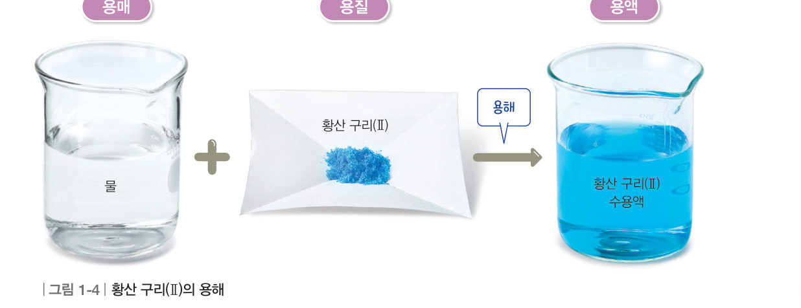
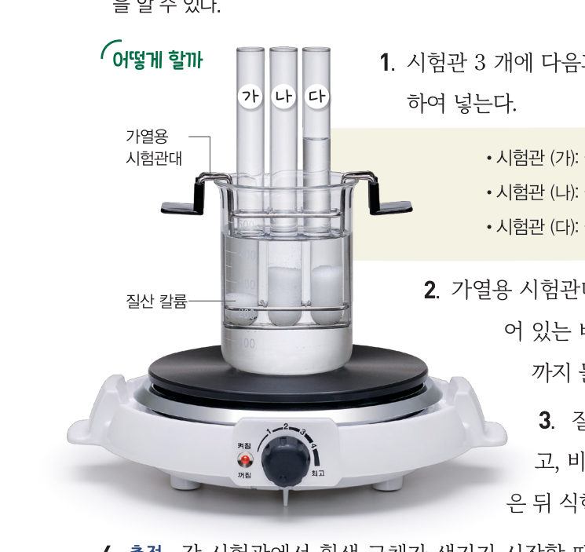
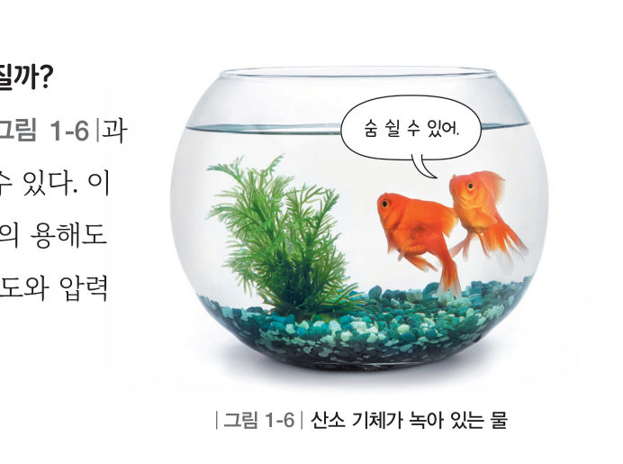
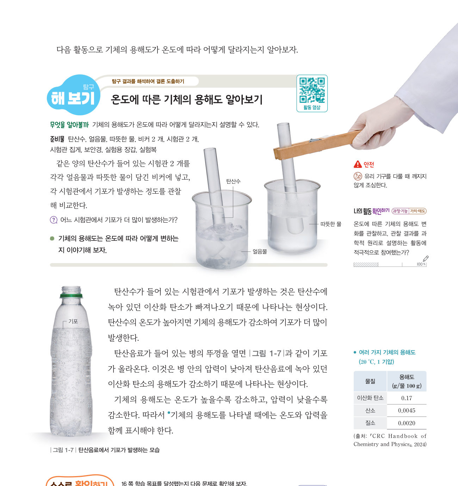

“아무리 저어도 녹지 않네.” “아, 어지러워.” 설탕이 더 이상 녹지 않는 까닭은 무엇일까? 가상 시험관을 식히며 질산 칼륨이 석출되는 온도를 재고, 용해도 곡선과 탄산수로 고체와 기체의 용해도를 알아보자.
🎯 이 단원을 배우면 — 용해도의 뜻을 알고, 용해도가 물질의 특성임을 설명할 수 있다.
교과서용해, 포화 용액과 불포화 용액 16쪽
물질의 녹는 양은 무엇에 따라 달라질까?
설탕이 물에 녹아 설탕물이 되는 것처럼 한 물질이 다른 물질에 녹아 고르게 섞이는 현상을 용해라고 한다. 그림 1-4와 같이 황산 구리(Ⅱ)를 물에 용해할 때 녹이는 물질인 물은 용매이고, 녹는 물질인 황산 구리(Ⅱ)는 용질이다. 또 황산 구리(Ⅱ) 수용액은 용질과 용매가 고르게 섞여 있는 용액이다.
일정한 양의 물에 황산 구리(Ⅱ)를 넣으면 어느 정도까지 녹다가, 어느 순간 더 이상 녹지 않는다. 어떤 온도에서 일정한 양의 용매에 용질이 최대로 녹아 있는 용액을 포화 용액이라고 하고, 포화 용액보다 용질이 적게 녹아 있는 용액을 불포화 용액이라고 한다.

그림 1-4황산 구리(Ⅱ)의 용해 — 용매(물) + 용질(황산 구리(Ⅱ)) → 용액
1소금물에서 소금은 , 물은 , 소금물은 이다.
탐구일정한 양의 용매에 녹는 용질의 양 비교하기 17쪽
시험관 3 개에 물과 질산 칼륨을 넣는다. (가) 물 10 g + 질산 칼륨 5 g, (나) 물 10 g + 질산 칼륨 10 g, (다) 물 20 g + 질산 칼륨 10 g
시험관을 물중탕으로 가열해 질산 칼륨을 모두 녹인다.
가열을 멈추고 온도계를 넣은 뒤 식힌다.
측정 각 시험관에서 흰색 고체가 생기기 시작할 때의 온도를 측정하여 기록한다.
⚠️ 질산 칼륨을 다룰 때 보안경을 착용한다. 가열 장치와 시험관대에 화상을 입지 않도록 주의한다.

17쪽가열용 시험관대 · 물중탕
가상 실험세 시험관 식히기
[물중탕으로 녹이기]를 누른 뒤 [식히기]를 눌러 보자. 흰색 고체(석출)가 처음 생기는 순간 그 시험관의 온도가 기록표에 적혀요. 세 시험관을 비교해 보자.
1고체가 생기기 시작하는 온도가 가장 높은 시험관은 이고, 시험관 (가)와 (다)에서 고체가 생기기 시작하는 온도는 .
2예상 물의 양이 100 g이고 물의 온도가 시험관 (가), (다)에서 고체가 생기기 시작하는 온도와 같다면, 이 물에 최대로 녹을 수 있는 질산 칼륨의 양은 약 g이다.
💬각 시험관에서 흰색 고체가 생기는 까닭을 이야기해 보자.
다르게 해 보기 · 일정한 양의 용매에 녹는 붕산의 양 비교하기
물 10 g이 들어 있는 시험관 2 개에 붕산 1 g과 2 g을 각각 넣고 물중탕으로 녹인 뒤, 식히면서 흰색 고체가 생기기 시작할 때의 온도를 측정한다. (아래 용해도 곡선으로 예상해 보자: 붕산 10 g/물 100 g → 약 45 ℃, 20 g → 약 70 ℃)
교과서용해도와 용해도 곡선 18쪽
일정한 양의 용매에 용질을 충분히 녹인 다음 냉각하면 용액에 녹아 있던 용질 중 일부가 고체로 분리된다(●석출). 어떤 온도에서 용매 100 g에 최대로 녹을 수 있는 용질의 g 수를 용해도라고 한다. 온도와 용매가 같을 때 물질의 용해도는 일정한 값을 나타내므로 물질의 특성이다. 또 물질의 종류에 따라 다르기 때문에 물질을 구분하는 데 이용할 수 있다.
온도에 따른 용해도 변화를 나타낸 그래프를 용해도 곡선이라고 한다(그림 1-5). 용해도 곡선으로 온도에 따른 물질의 용해도를 쉽게 비교할 수 있고, 용액을 냉각할 때 석출되는 용질의 양도 알 수 있다.
●용해도의 표시 용매의 종류에 따라 용해도가 다르므로 물질의 용해도를 나타낼 때에는 온도와 함께 용매의 종류를 표시해야 한다.
움직이는 그림 1-5용해도 곡선 읽기 · 냉각할 때 석출량
물질을 고르고, 처음 온도에서 포화 용액(물 100 g)을 만든 뒤 나중 온도로 식혀 보자. 그래프의 두 점 사이 높이 차이가 석출되는 양이에요.
처음 온도의 용해도-
나중 온도의 용해도-
석출되는 양 (물 100 g)-
120 ℃에서 물 100 g에 용해되는 양이 가장 많은 물질은 이다. 온도에 따른 용해도 변화가 가장 작은 물질은 이다.
해 보기온도에 따른 기체의 용해도 알아보기 18~19쪽
기체의 용해도는 무엇에 따라 달라질까?

그림 1-6산소 기체가 녹아 있는 물
물에는 산소 기체가 녹아 있어 물고기가 물속에서 숨을 쉴 수 있다. 이처럼 기체도 용해될 수 있다. 기체의 용해도는 기체의 종류에 따라 다르고, 온도와 압력에 영향을 받는다.
가상 실험탄산수 시험관을 얼음물과 따뜻한 물에
두 시험관의 물 온도와 마개를 정하고 기포가 나오는 정도를 비교해 보자. 마개를 열면 시험관 안의 압력이 낮아져요.
1기포가 더 많이 발생하는 것은 이다. 기체의 용해도는 온도가 감소하고, 압력이 감소한다.

그림 1-7탄산음료의 뚜껑을 열면 병 안의 압력이 낮아져 기포가 올라온다.
●여러 가지 기체의 용해도 (20 ℃, 1 기압, g/물 100 g)
이산화 탄소
0.17
산소
0.0045
질소
0.0020
기체의 용해도를 나타낼 때에는 온도와 압력을 함께 표시해야 한다.
스스로 확인하기16쪽 학습 목표를 달성했는지 확인해 보자 19쪽
1개념 확인 어떤 온도에서 용매 100 g에 최대로 녹을 수 있는 용질의 g 수를 ( )(이)라고 한다.
2사고력 탄산음료를 냉장고에 보관했을 때 톡 쏘는 느낌을 잘 느낄 수 있는 까닭을 기체의 용해도와 관련하여 설명해 보자.
🧩 첫 번째 블록 · 힌트 조각 2 (19쪽)
녹말은 물에 잘 ( ) 물질이라서 가라앉는다.
5분 테스트물질이 녹는 정도
1황산 구리(Ⅱ) 수용액에서 황산 구리(Ⅱ)와 같이 녹는 물질을 , 물과 같이 녹이는 물질을 라고 하고, 황산 구리(Ⅱ)가 물에 녹는 현상을 라고 한다. 어떤 온도에서 일정한 양의 용매에 용질이 최대로 녹아 있는 용액을 용액, 포화 용액보다 용질이 적게 녹아 있는 용액을 용액이라고 한다.
2용해도에 대한 설명으로 옳으면 O, 옳지 않으면 X
③ 어떤 온도에서 용액 100 g에 최대로 녹을 수 있는 용질의 g 수이다.
④ 용질과 용매의 종류에 따라 달라진다.
⑤ 온도에 관계없이 일정한 값을 나타낸다.
3⑥ 60 ℃의 물 25 g에 고체 A 10 g을 녹였더니 포화 용액이 되었다. 60 ℃에서 A의 용해도는 ⑦ 20 ℃의 물 25 g에 어떤 고체 60 g을 넣었더니 9 g이 녹지 않고 남았다. 20 ℃에서 이 물질의 용해도는 ⑧ 그림 1-5의 물질들로 80 ℃의 포화 용액(물 100 g)을 만들어 20 ℃로 냉각할 때 고체가 가장 많이 석출되는 것은
4⑨ 기체의 용해도는 온도가 ( ) 감소하고, 압력이 ( ) 감소한다. ⑩ 같은 양의 탄산음료를 넣은 시험관 — A 0 ℃·마개 닫음, B 0 ℃·마개 엶, C 20 ℃·마개 닫음, D 20 ℃·마개 엶, E 50 ℃·마개 엶, F 50 ℃·마개 닫음. 기포가 가장 많이 발생하는 시험관은
스스로 정리하기용해도 24쪽
3용해도
⑴ 용해도: 어떤 온도에서 용매 100 g에 최대로 녹을 수 있는 의 g 수 ⑵ 용해도 곡선의 이용: 온도에 따른 용해도를 쉽게 비교할 수 있고, 냉각할 때 석출되는 용질의 양을 알 수 있다. ⑶ 기체의 용해도: 이/가 높을수록 감소하고, 이/가 낮을수록 감소한다.
제출학생 정보 · 제출하기
모든 활동을 마친 뒤 제출하면 전체가 한 번에 채점되고 피드백이 나타나요. 답안은 선생님 스프레드시트(중2 탭)에 기록돼요.